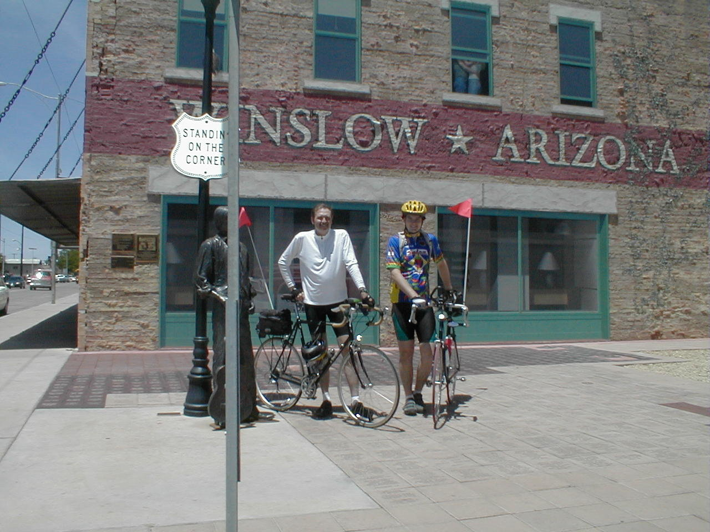

Day 9: May 21, Flagstaff, AZ to Holbrook, AZPrevious Day - Home - Next Day Photo of the DayDad and I just takin' it easy in Winslow, Arizona. Keegan's LogDay 9: May 21, Flagstaff, AZ to Holbrook, AZ Mileage: 96.62 milesWeather: 70-80 degrees, Sunny, Wind from the north Vertical Climb: 900 feet Riding Time: 5.75 hours Today was a fairly easy day, despite the nearly 100 miles of riding. I brought my bike out this morning ready to go, only to discover another night flat. The tiny piece of wire was eventually ferreted out and I replaced the tube, we were finally on our way. Mother Nature gave us a strong wind today, directly from the side for most of the trip. We quickly made our way to I-40, most of the day was again spent on the interstate. The morning went by quickly, our first rest stop was at a rest stop 40 miles into the ride. We also had a very gradual decent in the morning, which helped to counter the side wind. 15 miles after the rest stop, we rolled into Winslow, Arizona. The town is famous from the Eagle's song 'Takin it Easy', it sits on the old Route 66. We got our pictures in from of a mural on the side of a building and looked through a few postcard shops before heading off to lunch. We found a local café and had the special, two tacos and an enchilada, very good. After about 15 more miles of interstate riding, we exited in Jackrabbit, Arizona to visit the Jackrabbit Trading Post. The store was full of Route 66 trinkets, moccasins, postcards, and generic tourist stuff, definitely a small-town store. We both got our pictures taken riding the giant jackrabbit in front of the store. I think the heat does something to the minds of the people out here, it seems like everyone is a little crazy. Better get out while we still can... Back to the interstate to finish off the ride, we rolled in to Holbrook just before 4:00 in the afternoon. I took a nap as soon as we got back, woke up just in time to go to Denny's for dinner. Tomorrow we cross our second state line into New Mexico before stopping in Gallup. Phil's LogDay 9: Holbrook, AZ I'm tired and will try to be short as it's late. This was a good day, though it started ominously. We were a little late and about to leave when Keegan discovered that his rear tire was flat, as we call it, a "night flat". That took a while to fix. We headed out of Flagstaff into a brutal headwind, knowing that we had a 96 mile ride. But within about ten minutes, our course shifted away from the wind, and it diminished. In about another hour the wind was a quartering tail wind - rarely really favoring us but not in our faces, thankfully. Wind is the biggest factor to a bicyclist, a good one is to die for, a bad one kills you. We'd happily accept strong tailwinds and rain. But you get what God gives you, and the town are where He put the rivers. So you ride to your destination regardless. Today's ride turned out pretty well. We stopped in Winslow, Arizona. Some will recognize the town name from the Eagles' song "Takin it Easy", and the corner which was stood upon is quite prominent in this small town. It was fun, look on Keegan's website (http://expert.cc.purdue.edu/~brownkl) for the photo. Leslie kinda got the stop sign post in front of the statue of the cat that wrote the song (I'm laughing at myself because I don't know his name, and should.) I bought a book on the Burma-Shave sign series (the corner is on Route 66), and we went on to a hole-in-the-wall Mexican joint. Nice little cow-town. We also stopped at the Jack Rabbit Trading Post. There is a huge jack rabbit on which you sit for pictures, but the most interesting thing was a sign on the men's room window referring to the "security force" in the back, "Please don't tease the dogs." We continued on a VERY worn out and rough section of the original Route 66, open to traffic but with lots of scrub foliage growing through the tracks in the road. We are now in Holbrook, the extreme north end. If wee were in the west end we might be staying in the Teepee Motel, where each room is an individual teepee, but there are too many of us. Our clothes, washed in the sink, are drying on the motel railings and on the barbed wire fence (careful!) It is time to sleep, we ride to New Mexico tomorrow. The desert is ever changing, ever inhospitable, and beautiful. Bird calls, infrequent, are always a pretty surprise unnoticed by motorists. Oh yes, I had one more flat in sight of the motel, and walked it in. I'm now up to four rolling flats and two pinch flats. |
{kind=link}